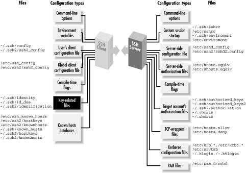
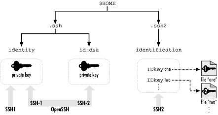
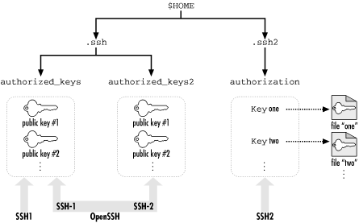

|  |
Chapter 6. Key Management and Agents
Your SSH private key is a precious thing. When you use public-key authentication, your key proves your identity to SSH servers. We've encountered several programs related to keys:- ssh-keygen
- Creates key pairs
- ssh-agent
- Holds private keys in memory, saving you from typing your passphrase repeatedly
- ssh-add
- Loads private keys into the agent

Figure 6-1. SSH user key and agent configuration (highlighted parts)
6.1. What Is an Identity?
An SSH identity is a sequence of bits that says, "I am really me." It is a mathematical construct that permits an SSH client to prove itself to an SSH server, so the SSH server will say, "Ah, I see, it's really you. You hereby are authenticated. Come in." An identity consists of two parts, called the private key and the public key. Together, they are known as a key pair. The private key represents your identity for outgoing SSH connections. When you run an SSH client in your account, such as ssh or scp, and it requests a connection with an SSH server, the client uses this private key to prove your identity to the server.WARNING: Private keys must be kept secret. An intruder with your private key can access your account as easily as you can.The public key represents your identity for incoming connections to your account. When an SSH client requests access to your account, using a private key as proof of identity, the SSH server examines the corresponding public key. If the keys "match" (according to a cryptographic test [Section 3.4.2.2, "Public-key authentication"]), authentication succeeds and the connection proceeds. Public keys don't need to be secret; they can't be used to break into an account. A key pair is typically stored in a pair of files with related names.[76] In SSH, the public key filename is formed by adding the suffix .pub to the private key filename. For example, if the file mykey holds a private key, its corresponding public key is found in mykey.pub.[77]
[76]In contrast, some Windows implementations such as F-Secure SSH Client store keys in the Windows Registry.
[77]In fact, in SSH1, the so-called "private key file" contains the public key as well, for completeness, and only the part of the file containing the private key is encrypted with the passphrase. But the private key file is in a private binary format; the public key file is there for human convenience, to make it easy to add the public key to an authorized_keys file with a text editor, for example.You may have as many SSH identities as you like. Most SSH-1 and SSH-2 implementations let you specify a default identity clients use unless told otherwise. To use an alternative identity, you must change a setting by command-line argument, configuration file, or some other configuration tool. The structure of identity files differs for SSH1, SSH2, and OpenSSH, so we will explain them separately. Their locations in the filesystem are shown in Figure 6-2 (private keys) and Figure 6-3 (public keys).

Figure 6-2. SSH identity files (private keys) and the programs that use them

Figure 6-3. SSH authorization files (public keys) and the programs that use them
6.1.1. SSH1 Identities
An SSH1 identity is stored in two files. By default in SSH1, the private key is stored in the file identity and the public key in identity.pub. This key pair, which is kept in your ~/.ssh directory, is your default identity clients use unless told otherwise. The .pub file containing your public key has no function by itself. Before it can be used for authentication, this public key must be copied into an authorization file on an SSH-1 server machine, such as ~/.ssh/authorized_keys for SSH1 or OpenSSH. Thereafter, when an SSH-1 client requests a connection to your server account using a private key as proof of identity, the SSH1 server consults your authorized_keys file to find the matching public key. [Section 3.4.2.2, "Public-key authentication"]6.1.2. SSH2 Identities
An SSH2 key pair, like its SSH1 ancestor, is stored in two files with the same relationship between their names (i.e., the private key filename plus .pub yields the public key filename). SSH2 key files are often named based on the key's cryptographic properties. For example, a 1024-bit, DSA-encrypted key is generated by default in the SSH2 files id_dsa_1024_a and id_dsa_1024_a.pub. Unlike SSH1, however, an SSH2 identity is not a single key but a collection of keys. When an SSH2 client tries to authenticate, it may use all keys in the collection. If the first key fails to authenticate, the SSH2 client automatically tries the second, and so forth, until it succeeds or fails completely. To create an identity in SSH2, private keys must be listed in a file called an identification file. Your default identity is stored in ~/.ssh2/identification.[78] Inside the file, private keys are listed one per line. For public-key authentication, a line begins with the keyword IdKey, followed by the name of the private key file:[78]This default may be changed with the IdentityFile keyword. [Section 7.4.2, "User Identity"]
You may recall that SSH2 supports PGP key authentication. [Section 5.5.1.6, "PGP authentication"] The identification file may also contain PGP-related keywords:# SSH2 identification file # The following names are relative to ~/.ssh2 IdKey id_dsa_1024_a IdKey my-other-ssh2-key # Absolute paths work for SSH2 2.1.0 and later IdKey /usr/local/etc/third-key
Using a separate identification file might seem cumbersome, but it provides flexibility SSH1 doesn't. As we've said, it permits an identity to contain multiple keys, any one of which may authenticate you. Another advantage of the SSH2 system is ease of deletion. To remove an SSH2 private key from consideration, simply delete or comment out its line from the identification file. To accomplish the same task with SSH1, you have to rename the private key file. Like SSH1, SSH2 has an authorization file for incoming connections but with a difference. Instead of containing copies of public keys, the SSH2 authorization file merely lists the public key files using the Key keyword:# SSH2 identification file PgpSecretKeyFile my-file.pgp IdPgpKeyName my-key-name
This is easier to maintain than SSH1's authorized_keys file because only one copy of each public key exists. For SSH1 and OpenSSH, in contrast, there are separate copies in the .pub and authorized_keys files. [Section 8.2.2, "SSH2 Authorization Files "]# SSH2 authorization file Key id_dsa_1024_a.pub Key something-else.pub
6.1.3. OpenSSH Identities
For SSH-1 connections, OpenSSH uses exactly the same identity and authorization files as SSH1. For SSH-2 connections, your default identity is stored in the file ~/.ssh/id_dsa (private key) and ~/.ssh/id_dsa.pub (public key). The SSH-2 authorization file for OpenSSH is ~/.ssh/authorized_keys2, and its format is similar to that of ~/.ssh/authorized_keys. [Section 8.2.1, "SSH1 Authorization Files "] |  | |
| 5.10. Summary |  | 6.2. Creating an Identity |